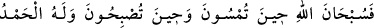

mi?” takdirindedir.
(
) cümleleri her ikisi de (
) yâni “tam ve bol olarak verdi” mânâsına
gelir. Âyetteki fiilin (
) şeklinde şedde ile getirilmesi, İbrahim (a.s.)’ın Allah’a
vermiş olduğu söze son derece sadâkat gösterdiğini bildirmeye matuf teksir veya
mübalağa mânâsını verebilmek içindir. İbrahim (a.s.)’ın çok vefalı oluşunun burada
özellikle ona tahsis edilmesinin gayesi, ondan başkası için pek mümkün görülmeyen
ahde vefadaki üstün sabrını göstermek içindir. Nitekim o bu sabrıyla Nemrud’un ateşine
karşı direnmiştir. Hattâ kendisine Cibrîl (a.s.) gelip de “Bir ihtiyacın (arzun) var mı?”
dediği zaman o “Sana bir ihtiyacım yok” demiş ve oğlunu kurban edeceği zaman da
hanımını ve çocuğunu ekin bitmeyen bir yerde bırakıp ayrıldığı zaman da yine bu sabırla
ahde vefa etmiştir.
Rivâyete göre İbrahim (a.s.) her gün bir misâfir bulabilmek için bir fersah yol giderdi.
Şâyet bir misâfir bulursa kendisine ikramda bulunur; değilse o gün oruca niyet ederdi.
Onunla ilgili şu söz ne güzeldir!: “Kalbi Rahman’da iken bedenini ateşe atan, malı
kardeşlerinde iken de çocuğunu kurban etmek isteyen ne kadar vefakârdır!”
Nebi (s.a.)’den rivâyet olunan bir hâdise göre “İbrahim (a.s.) her gün amelde de
vefâlı idi; dört rek’at duhâ/kuşluk namazı kılardı.” Kudsî hadiste buyrulur: Ey
âdemoğlu, günün evvelinde dört rek’at namaz kıl ki günün sonuna kadar bu seni
korusun!”[111]
Bir rivâyete göre de Rasûlullah (s.a.): “Allah’ın çok vefalı kulu İbrahim (a.s.)’i
niçin “Halîlullah” diye isimlendirdiğini size haber vereyim mi? O sabah ve akşam:
“Akşama girdiğinizde, sabaha kavuştuğunuzda, Allah’ı tesbîh edin. Göklerde ve
yerde hamd O’na mahsustur. Gündüzün sonunda ve öğle vaktine girdiğinizde
Allah’ı tespîh edin.” (er-Rum 30/17-18) derdi de ondan.”[112] buyurarak ve bu iki
âyeti okumuştur. Ahmed b. Hanbel, Müsned’inden bunun üç âyet olduğunu belirtmiştir
ki Aynü’l-Meânî’de de böyledir.
Ebû Zer Gıfârî (r.a.)’den bildirildiğine göre şöyle demiştir: “Ben Rasûlullah
(s.a.)’a: “Ey Allah’ın Rasülü! Allah Teâlâ kaç kitap indirmiştir?” diye sorduğumda
bana: “Yüz suhuf ve dört (büyük) kitap. Âdem (a.s.)’a on suhuf, Şit (a.s.)’e elli suhuf,
İdris (a.s.)’e otuz suhuf ve İbrahim (a.s.)’e de on suhuf. Yine Allah Teâlâ Tevrat, İncil,
Zebur ve Furkan’ı da indirmiştir.” diye karşılık verdi. Bunun üzerine ben ona: “Ey
Allah’ın Rasûlü! İbrahim (a.s.)’ın suhufunda ne vardı? Neler yazılıydı? dediğimde:
“Onda bazı veciz sözler var idi. Mesela: “Ey gururuyla imtihan olunan kral!
Şüphesiz ki ben seni dünya mallarını biriktirmen için değil, ancak zulme uğramış
olanın çağrısını kulak ardı etmemen için vazifelendirdim. Zira Ben dahi kâfir